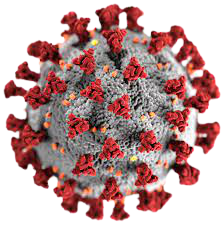
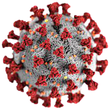
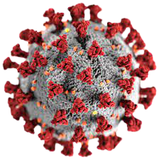
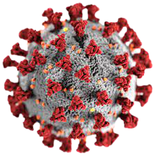

cvid-19
cvid-19
cvid-19
cvid-19
- Authorized COVID-19 vaccines can help protect you from COVID-19.
- You should get a COVID-19 vaccine as soon as you can.
- Once you are fully vaccinated, you may be able to start doing some things that you had stopped doing because of the pandemic
- Everyone 2 years or older who is not fully vaccinated should wear a mask in indoor public places.
- In general, you do not need to wear a mask in outdoor settings.
- People who have a condition or are taking medications that weaken their immune system may not be fully protected even if they are fully vaccinated. They should continue to take all precautions recommended for unvaccinated people, including wearing a well-fitted mask, until advised otherwise by their healthcare provider.
- Avoid close contact with people who are sick.
- If possible, maintain 6 feet between the person who is sick and other household members.
- Being in crowded places like restaurants, bars, fitness centers, or movie theaters puts you at higher risk for COVID-19.
- Avoid indoor spaces that do not offer fresh air from the outdoors as much as possible.
- If indoors, bring in fresh air by opening windows and doors, if possible.
- Testing can give you information about your risk of spreading COVID-19.
- You can choose from many different types of tests.
- Regardless of the test type you select, a positive test result means that you have an infection and should isolate and inform your close contacts to avoid spreading disease to others.
- Over-the-counter self-tests can be used at home or anywhere, are easy to use, and produce rapid results. Anyone can use self-tests, regardless of vaccination status or whether they have symptoms or not.
- Consider using a self-test before joining indoor gatherings with others who are not in your household.